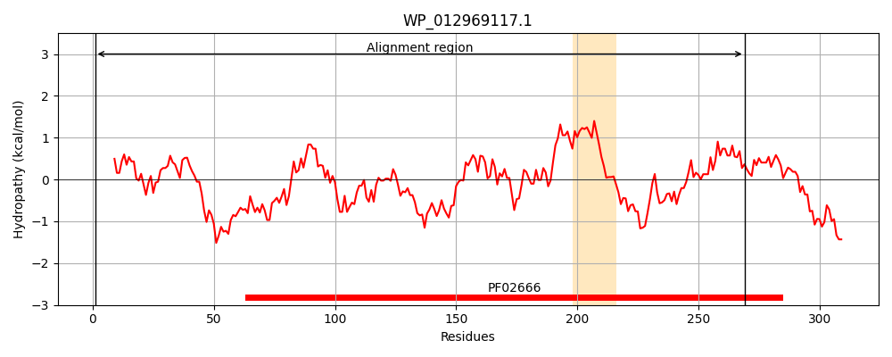
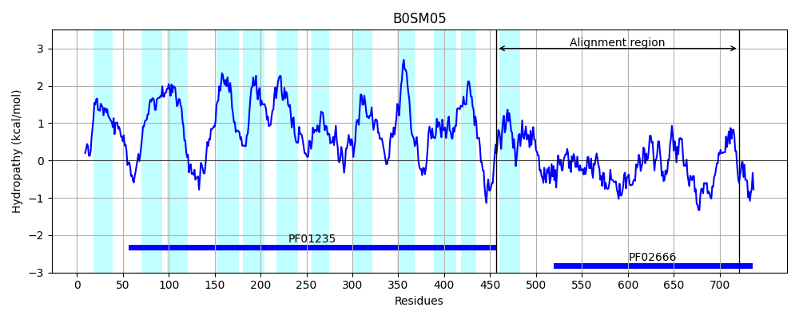
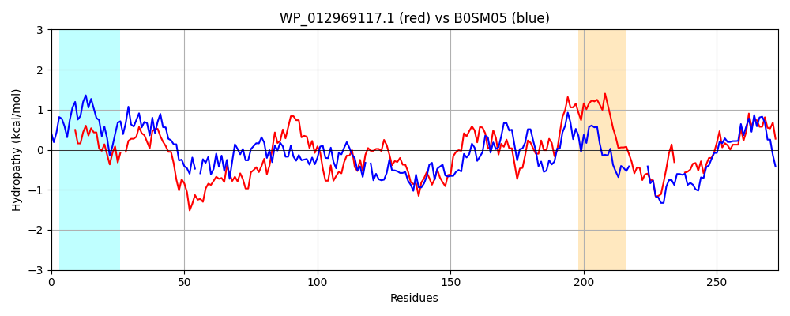

Hit Accession: B0SM05
Hit TCID: 2.A.25.1.6
Hit Description: gnl|BL_ORD_ID|1582 gnl|TC-DB|B0SM05|2.A.25.1.6 Bifunctional protein: Sodium:alanine symporter/Phosphatidylserine decarboxylase proenzyme putative membrane protein OS=Leptospira biflexa serovar Patoc (strain Patoc 1 / ATCC 23582 / Paris) GN=LEPBI_I2554 PE=3 SV=1
Mach Len: 273
e:0.000000
Query TMS Count : 1
Hit TMS Count: 12
TMS-Overlap Score: 0.000000
Predicted Substrates:CHEBI:9175;sodium(1+), CHEBI:2539;alanine
BLAST Alignment:
Score: 429 , Bit scores: 169 bits, E-value: 1.5e-47, Alignment length: 273, Percentage identity: 36
Query: 1 MLNDLKLSLQYILPKLWLTRLAGWGAS-KRAGWLTKLVIDLFVKYYKVDMKEAQKPDTAAYRTFNDFFVRPLRDDVRPLNTDPNVLVMPADGVISQLGAIEDDKILQAKGHDYSLEALLAGNYQMADLFRNGSFATTYLSPRDYHRVHMPCNGILREMIYVPGDLFSVNHLTAQNVPNLFARNERVICLFDTEFGPMAQILVGATIVGSIETVWSGTVTPPREGIIKRWTWPAGD---SEGSVALLKGQEMGRFKLGSTVINLFAPGQVKLVD 269
+ D+ L +LPK ++++ G+ ++ K ++ ++ F K YK+++ EA+ + Y + N FF R LR + R +++ PN +V P D I+ G I I+QAKG DYS++ LL G+ + F NG + T YLSP+DYHR+H P G + Y PG LF VN L N+ LF +NER+I TE+G +A I VGA+ VG I + + + W A + + S+ + KG EMGRF++GSTVI +F G + L +
Sbjct: 457 IFKDIYLLFLTLLPKNLISKIFGYFSTMKLPRFMMIPILKAFAKAYKINLSEAEL-EIKEYASLNQFFTRALRAEARIIDSAPNAVVSPTDSKITSFGNINQSTIIQAKGIDYSVKELL-GSEKFYPHFTNGKYITFYLSPQDYHRIHSPFAGQILGYYYEPGKLFPVNDLAVLNIRGLFPKNERLITFLQTEYGKIAVIKVGASNVGKIRVTYDNKI------VTNNWIRFAKEHHYKDVSIMIEKGSEMGRFEMGSTVILVFENGTIDLTN 721 | Protein Hydropathy Plots: |
|---|
|  |  |
Pairwise Alignment-Hydropathy Plot:
|
|---|
|  |